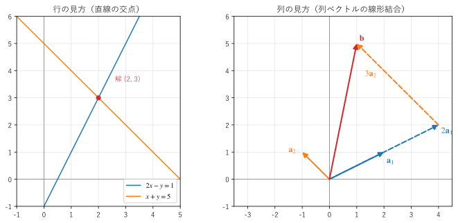
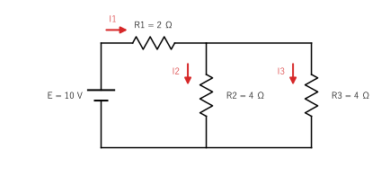

第 5 章 連立一次方程式
工学の問題を数式にすると、多くの場合、連立一次方程式になる。この章では、連立一次方程式を行列で表し、図による 2 つの見方を示した後、コンピューターでも使われる解法であるガウスの消去法と LU 分解を説明する。最後に、電気回路の電流を求める例を示す。
行列による表示
次の連立一次方程式を考える。
係数を並べた行列 \(A\)、未知数のベクトル \(\bm{x}\)、右辺のベクトル \(\bm{b}\) を使うと、この方程式は \(A\bm{x} = \bm{b}\) と書ける。
\(A\) を係数行列という。未知数が 1000 個あっても、方程式は同じ \(A\bm{x} = \bm{b}\) の形で書ける。
2 つの見方
第 3 章で、行列とベクトルの積に 2 つの見方があることを示した。連立一次方程式にも、それに対応する 2 つの見方がある（図 6）。

図 6 連立一次方程式の行の見方（左）と列の見方（右）
行の見方。各方程式（行列の各行）は、平面上の直線を表す。解は、すべての直線が通る点、つまり交点である。この例では、2 本の直線 \(2x - y = 1\) と \(x + y = 5\) の交点 \((2, 3)\) が解になる。3 元の方程式なら、各方程式は 3 次元空間の平面を表し、解は 3 枚の平面の交点である。
列の見方。方程式は、右辺 \(\bm{b}\) を、係数行列の列ベクトルの線形結合で表す問題である。
右の図のように、\(\bm{a}_1\) を 2 倍し、\(\bm{a}_2\) を 3 倍してつなぐと \(\bm{b}\) に着く。解 \(x = 2\)、\(y = 3\) は、その係数である。
行の見方は図が描きやすいが、未知数が増えると扱いにくい。列の見方は、解が存在するかどうかを考えるときに威力を発揮する（第 8 章）。
解の個数
2 元の連立一次方程式を行の見方で考えると、解の個数には 3 つの場合がある。
直線の位置関係 |
解 |
例 |
|---|---|---|
1 点で交わる |
ただ 1 つ |
\(2x - y = 1,\ x + y = 5\) |
平行で、一致しない |
存在しない |
\(x + y = 1,\ x + y = 2\) |
一致する |
無数にある（直線上のすべての点） |
\(x + y = 1,\ 2x + 2y = 2\) |
「解が 2 つだけある」ということは起こらない。2 つの解 \(\bm{x}_1, \bm{x}_2\) があれば、\(A(t\bm{x}_1 + (1 - t)\bm{x}_2) = t\bm{b} + (1 - t)\bm{b} = \bm{b}\) なので、2 点を結ぶ直線上のすべての点が解になるからである。未知数がいくつあっても、連立一次方程式の解は「ただ 1 つ」「存在しない」「無数にある」のいずれかである。どの場合になるかは、第 6 章の行列式と第 8 章のランクで判定できる。
ガウスの消去法
連立一次方程式を解く基本的な方法は、中学校で学ぶ加減法を系統的に行うガウスの消去法である。次の 3 元連立一次方程式を例に説明する。
係数行列と右辺を並べた行列 \((A \mid \bm{b})\) を拡大係数行列という。
消去法では、次の 3 つの操作を使う。これらを行基本変形という。どの操作も、方程式の解を変えない。
ある行に、別の行の定数倍を加える。
2 つの行を入れ替える。
ある行に、0 でない数を掛ける。
前進消去。まず、1 行目を使って、2 行目と 3 行目の 1 列目を 0 にする。2 行目に 1 行目の 3/2 倍を加え、3 行目に 1 行目を加える。
次に、2 行目を使って、3 行目の 2 列目を 0 にする。3 行目から 2 行目の 4 倍を引く。
係数行列の部分が上三角行列になった。消去に使った対角成分（2、0.5、-1）をピボットという。
後退代入。下の行から順に未知数を求める。3 行目から \(-z = 1\) なので \(z = -1\)。2 行目 \(0.5y + 0.5z = 1\) に代入して \(y = 3\)。1 行目 \(2x + y - z = 8\) に代入して \(x = 2\) である。
この手順を リスト 12 に示す。
16def gaussian_elimination(a: ArrayLike, b: ArrayLike, pivoting: bool = False,
17 verbose: bool = False) -> Vector:
18 """ガウスの消去法で a x = b を解き、x を返す."""
19 # 拡大係数行列 [a | b] を作る（元の配列は書き換えない）
20 m = np.hstack([np.array(a, dtype=float), np.array(b, dtype=float).reshape(-1, 1)])
21 n = m.shape[0]
22
23 # 前進消去: k 列目の、k 行目より下の成分を 0 にする
24 for k in range(n - 1):
25 if pivoting:
26 p = k + int(np.argmax(np.abs(m[k:, k])))
27 if p != k:
28 m[[k, p]] = m[[p, k]] # 行を入れ替える
29 if verbose:
30 print(f"行 {k + 1} と行 {p + 1} を入れ替える")
31 if m[k, k] == 0.0:
32 raise ZeroDivisionError(f"ピボットが 0 になった（{k + 1} 列目）")
33 for i in range(k + 1, n):
34 factor = m[i, k] / m[k, k]
35 m[i] -= factor * m[k] # 行 i から、行 k の factor 倍を引く
36 if verbose:
37 print(f"{k + 1} 列目の消去の後:")
38 print(m)
39
40 # 後退代入: 下の行から順に未知数を求める
41 x = np.zeros(n)
42 for i in range(n - 1, -1, -1):
43 x[i] = (m[i, -1] - m[i, i + 1:n] @ x[i + 1:]) / m[i, i]
44 return x
m[i] -= factor * m[k] が「行 \(i\) から行 \(k\) の定数倍を引く」操作である。NumPy では行全体を 1 つのベクトルとして扱えるので、列についてのループを書かずに済む。引数 pivoting は、第 13 章で説明するピボット選択を行うかどうかの指定であり、ここでは使わない。実行結果は次のとおりで、手計算と一致する。
1 列目の消去の後:
[[ 2. 1. -1. 8. ]
[ 0. 0.5 0.5 1. ]
[ 0. 2. 1. 5. ]]
2 列目の消去の後:
[[ 2. 1. -1. 8. ]
[ 0. 0.5 0.5 1. ]
[ 0. 0. -1. 1. ]]
解 x = [ 2. 3. -1.]
np.linalg.solve の解 = [ 2. 3. -1.]
サンプルの全体：ch05_gauss.py
途中でピボットが 0 になった場合は、下の行と入れ替えてから消去を続ける。どの行と入れ替えても 0 にしかならない場合は、解がただ 1 つには定まらない（解が存在しないか、無数にある）。
消去法の計算量は、前進消去がおよそ \(\tfrac{2}{3}n^3\) 回の演算、後退代入がおよそ \(n^2\) 回の演算である。未知数が 1000 個なら約 7 億回であり、現在のコンピューターでは 1 秒もかからない。
LU 分解
同じ係数行列 \(A\) で、右辺 \(\bm{b}\) だけが異なる方程式を何度も解くことがある。例えば、構造物の解析で荷重の条件を変える場合や、回路の解析で電源の電圧を変える場合である。毎回消去法をやり直すと、\(O(n^3)\) の前進消去を繰り返すことになり、無駄が大きい。
前進消去の計算は、右辺に依存しない。そこで、消去に使った倍率を記録しておく。上の例では、2 行目の消去に -1.5（1 行目の -1.5 倍を引いた）、3 行目に -1 と 4 を使った。この倍率を対角成分 1 の下三角行列 \(L\) に並べ、前進消去の結果の上三角行列を \(U\) とすると、\(A = LU\) が成り立つ。
これをLU 分解という。\(A = LU\) なら、\(A\bm{x} = \bm{b}\) は \(L(U\bm{x}) = \bm{b}\) なので、\(\bm{y} = U\bm{x}\) とおいて、次の 2 段階で解ける。
\(L\bm{y} = \bm{b}\) を上から順に解く（前進代入）。
\(U\bm{x} = \bm{y}\) を下から順に解く（後退代入）。
三角行列の方程式は \(O(n^2)\) で解けるので、分解を一度行えば、右辺ごとの計算は \(O(n^2)\) で済む。
15def lu_decompose(a: ArrayLike) -> tuple[Matrix, Matrix]:
16 """a = L U となる単位下三角行列 L と上三角行列 U を返す."""
17 u = np.array(a, dtype=float)
18 n = u.shape[0]
19 lower = np.eye(n)
20 for k in range(n - 1):
21 for i in range(k + 1, n):
22 lower[i, k] = u[i, k] / u[k, k] # 消去に使った倍率を L に記録する
23 u[i] -= lower[i, k] * u[k]
24 return lower, u
L =
[[ 1. 0. 0. ]
[-1.5 1. 0. ]
[-1. 4. 1. ]]
U =
[[ 2. 1. -1. ]
[ 0. 0.5 0.5]
[ 0. 0. -1. ]]
L @ U == a: True
b = [8.0, -11.0, -3.0] の解 x = [ 2. 3. -1.]
b = [1.0, 0.0, 0.0] の解 x = [ 4. -2. 5.]
1 つ目の右辺の解は、消去法の結果と一致している。2 つ目の右辺 \(\bm{b} = (1, 0, 0)\) の解は、第 6 章で扱う逆行列 \(A^{-1}\) の 1 列目になる。
サンプルの全体：ch05_lu.py
このサンプルは説明のため、ピボット選択を行っていない。実用のライブラリ（SciPy の scipy.linalg.lu_factor() など）は、行の入れ替えを記録する置換行列 \(P\) を含めた \(PA = LU\) の形で分解する。
例：電気回路の電流
図 7 の回路に流れる電流を求める。電源の電圧は \(E = 10\) V、抵抗は \(R_1 = 2\) Ω、\(R_2 = R_3 = 4\) Ω である。


図 7 抵抗の回路と電流の向き
キルヒホッフの法則から、電流 \(I_1, I_2, I_3\) について次の式が成り立つ。
電流の法則（上の節点に流れ込む電流と流れ出す電流は等しい）：\(I_1 = I_2 + I_3\)
電圧の法則（電源、\(R_1\)、\(R_2\) を通る閉路）：\(R_1 I_1 + R_2 I_2 = E\)
電圧の法則（\(R_2\) と \(R_3\) を通る閉路）：\(R_2 I_2 - R_3 I_3 = 0\)
行列で表すと次のようになる。
実用の計算では、消去法を自分で書かず、NumPy の np.linalg.solve() を使う。内部では、ピボット選択付きの LU 分解（LAPACK というライブラリ）が使われる。
24def report() -> None:
25 """連立一次方程式を作って解き、電流を表示する."""
26 a = np.array([[1.0, -1.0, -1.0],
27 [R1, R2, 0.0],
28 [0.0, R2, -R3]])
29 b = np.array([0.0, E, 0.0])
30 currents = np.linalg.solve(a, b)
31 for name, value in zip(["I1", "I2", "I3"], currents):
32 print(f"{name} = {value:.3f} A")
I1 = 2.500 A
I2 = 1.250 A
I3 = 1.250 A
\(R_2\) と \(R_3\) の並列の合成抵抗は 2 Ω なので、回路全体の抵抗は 4 Ω であり、\(I_1 = 10/4 = 2.5\) A になる。これは計算結果と一致する。この程度の回路なら合成抵抗で解けるが、回路が複雑になると、連立一次方程式として解くほうが確実である。回路シミュレーター（SPICE など）は、節点の電圧を未知数とする大規模な連立一次方程式を解いている。
サンプルの全体：ch05_circuit.py
この章のまとめ
連立一次方程式は \(A\bm{x} = \bm{b}\) と書ける。
行の見方では解は直線（平面）の交点であり、列の見方では解は \(\bm{b}\) を列ベクトルの線形結合で表す係数である。
解は「ただ 1 つ」「存在しない」「無数にある」のいずれかである。
ガウスの消去法は、前進消去で上三角行列を作り、後退代入で解を求める。計算量は \(O(n^3)\) である。
LU 分解 \(A = LU\) をしておけば、右辺を変えて何度も解くときの計算が \(O(n^2)\) で済む。
実用の計算では
np.linalg.solve()を使う。